《HTTP 权威指南》读书笔记（第 7-15、20 章）
书接上回，第 7-15、20 章的笔记。
第 7 章 - 缓存
- Page 170缓存解决的问题：
- 减少了冗余的数据传输；
- 缓解了网络瓶颈的问题；
- 降低了对原始服务器的要求（比如名人事件引起的“瞬间拥塞”）；
- 降低了距离时延。
- Page 183缓存处理流程图：
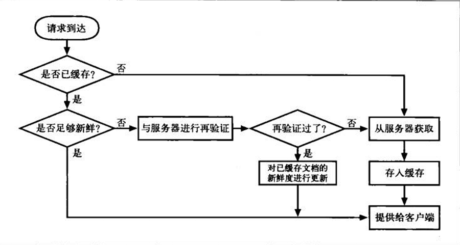
- Page 185设置缓存过期日期与使用期：服务器用以下首部来指定响应资源的有效期，一旦已缓存文档过期，缓存就必须与服务器进行核对，询问文档是否修改过（服务器再验证）。若修改过，则需要获取一份新鲜的副本。
- （HTTP/1.0+）Expires 首部：绝对时间；
- （HTTP/1.0+）Etag 首部：版本的标识符；
- （HTTP/1.1）Cache-Control: max-age 首部：相对时间。
- Page 186HTTP 协议要求行为正确的缓存返回下列内容之一：
- “足够新鲜”的已缓存副本；
- 与服务器进行过再验证，确认其仍然新鲜的已缓存副本；
- 如果需要与之进行再验证的原始服务器出故障了，就返回一条错误报文；
- 附有警告信息说明内容可能不正确的已缓存副本。
- Page 186服务器再验证：
- “再验证”对应的两种情况：
- 如果再验证显示内容发生了变化，缓存会获取一份新的文档副本，并将其存储在旧文档的位置上，然后将文档发送给客户端；
- 否则，缓存只需要获取新的首部，包括一个新的过期日期，并对缓存中的首部进行更新即可（返回 304）。
- 通过发送一个“条件 GET”，可以将新鲜度检测和对象获取结合成单个请求；
- 客户端的 5 个条件请求首部：
- If-Modified-Since：如果从指定日期之后文档被修改过了，就执行请求的方法（配合响应首部 Last-Modified）；
- If-Unmodified-Since：（同上）；
- If-None-Match：如果已缓存标签与服务器文档中的标签有所不同，就执行请求的方法（配合响应首部 ETag）；
- If-Match：（同上）；
- If-Range：支持对不完整文档的缓存。
- HTTP/1.1 - “弱验证器”：服务器希望在对文档进行一些非实质性或不重要的修改时，不要使所有已缓存副本都失效。服务器会使用前缀 “W/” 来标识弱验证器，如 “*ETag: W/“v2.6”*”；
- Page 191缓存控制：
- 服务器缓存控制首部（优先级递减）：
- Cache-Control: no-store：禁止缓存对响应的复制；
- Cache-Control: no-cache：可以存储在本地缓存区中，只是每次使用前需要向服务器进行“新鲜度检测”；
- Cache-Control: must-revalidate：在没有跟原始服务器进行再验证的情况下，不能提供这个对象的陈旧副本（即使配置了缓存可以使用陈旧对象）；
- Cache-Control: max-age：值设置为 0 则不缓存文档；
- Expires：（由于服务器时钟可能不同步，因此不推荐使用）。
- 试探性过期：如果响应中没有 Cache-Control: max-age 首部，也没有 Expires 首部，缓存可以计算出一个试探性最大使用期。可以使用诸如 “LM-Factor” 算法，但如果得到的最大使用期大于 24 小时，则应该向响应首部添加一个 “Heuristic Expiration Warning” 首部。
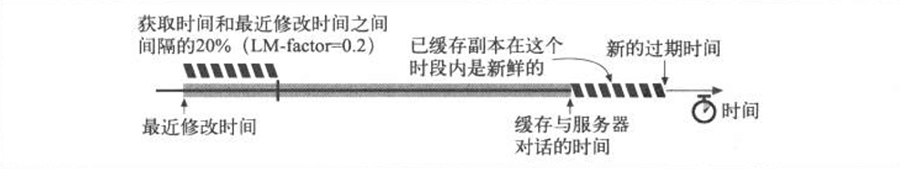
- Cache-Control 请求首部指令：为客户端提供的覆盖和强制重载机制：
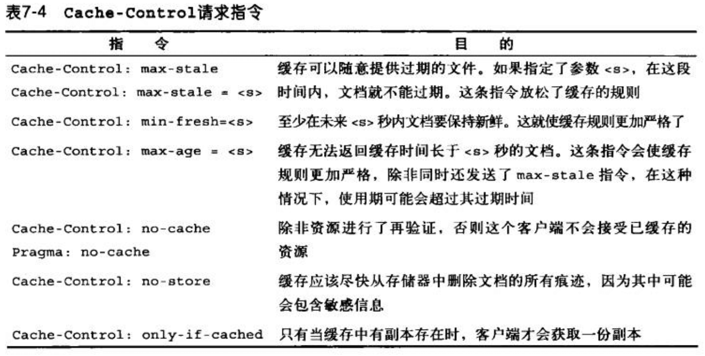
- 缓存需要将服务器过期信息与客户端的新鲜度要求结合在一起，以确定最大的新鲜生存期。
第 8 章 - 集成点：网关、隧道及中继
- Page 208网关：
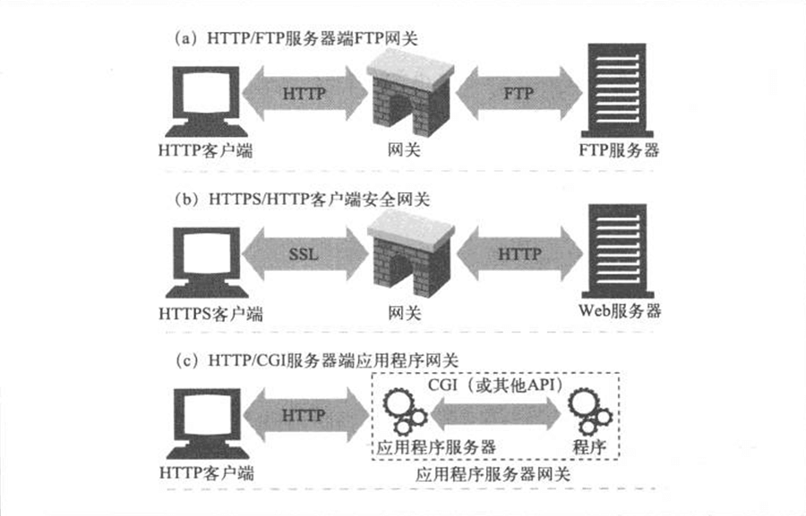
- 有些网关会自动将 HTTP 流量转换为其他协议，以便 HTTP 客户端可以在无需了解其他协议的情况下，与其他程序交互；
- 客户端与服务器端网关：
- 服务器端网关：通过 HTTP 与客户端对话，通过其他协议与服务器通信（HTTP/*）；
- 客户端网关：通过其他协议与客户端对话，通过 HTTP 与服务器通信（*/HTTP）。
- 资源网关即传统的“应用程序服务器”，其会将目标服务器与网关结合在一个服务器中实现；
- Page 215CGI（Common Gateway Interface）模型：
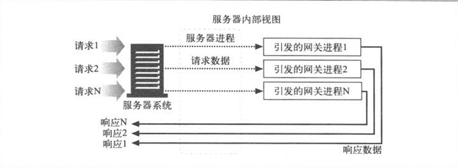
- 服务器与 CGI 应用程序是分开且独立的；
- CGI 是一个标准接口集，Web 服务器可以用它来装载程序以响应对特定 URL 的 HTTP 请求，并收集程序输出，以 HTTP 响应的形式回送；
- 传统 CGI 会为每条 CGI 请求启动一个新进程，而这导致了较大的开销。为了解决这个问题，FastCGI 出现了。这个接口模拟了 CGI，但它是作为持久守护进程运行的，消除了为每个请求建立或拆除新进程带来的性能损耗；
- Page 215Web 服务（独立的 Web 应用程序）可以用 XML 通过 SOAP（Simple Object Access Protocol，简单对象访问协议）来交换信息。
- Page 217Web 隧道：
- 允许用户通过 HTTP 连接发送非 HTTP 流量；
- Web 隧道需要使用 HTTP 的 CONNECT 方法（非 HTTP/1.1 核心规范的一部分）建立，该方法请求隧道网关创建一条到达任意目的服务器和端口的 TCP 连接，并对客户端和服务器之间的后继数据进行盲转发。
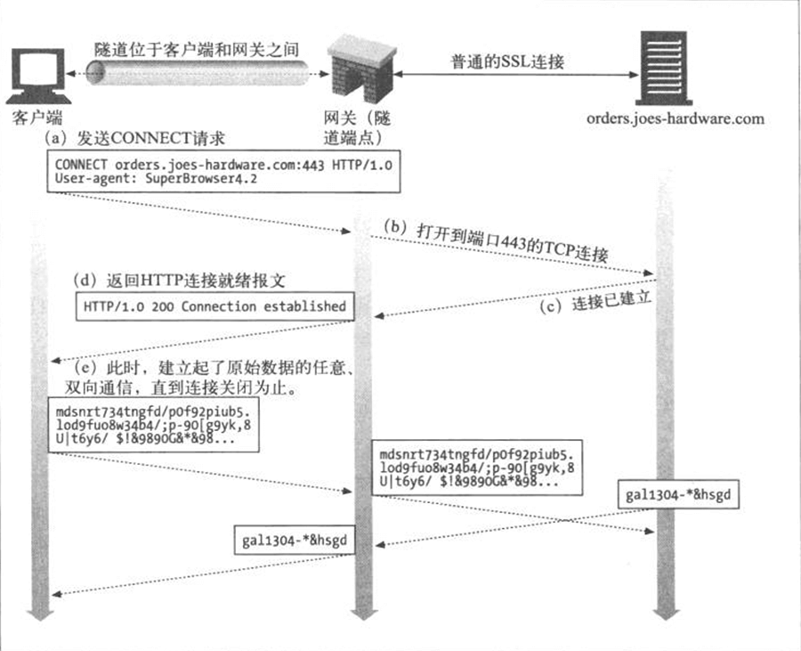
- 由于隧道化协议中可能包含数据的依赖关系，所以隧道的任一端都不能忽略输入数据。隧道一端对数据的消耗不足可能会将隧道另一端的数据生产者挂起，造成死锁；
- SSL 隧道与 HTTP/HTTPS 网关的对比：（可形象理解为：“代理”与“中转”的区别）
- 网关方式中，客户端与网关之间的连接时普通非安全的 HTTP；
- 网关方式中，尽管代理是已认证主体，但客户端无法对远端服务器执行 SSL 客户端认证（客户端对远端 SSL 服务一无所知）；
- 网关方式中，网关自身要支持完整的 SSL 实现。
- 适当情况下，也可以将代理的认证支持与隧道配合使用，对客户端使用隧道的权利进行认证。
- Page 222中继：是没有完全遵循 HTTP 规范的简单 HTTP 代理。负责处理 HTTP 中建立连接的部分，然后对字节进行盲转发。
第 9 章 - Web 机器人
- Page 227通常，机器人的根集（起始 URL 集合）可以从包含一些大的流行 Web 站点的集合开始。大部分搜索引擎使用的爬虫，都为用户提供了向根集中提交新页面或无名页面的方式。
- Page 230可以使用 “Bloom Filter（布隆过滤器）”来快速检查爬虫是否已经访问过一个 URL。它是一种多哈希函数映射的快速查找算法。
- Page 233避免爬虫陷入循环和重复抓取的几种方式：
- 规范化 URL；
- 广度优先搜索；
- 节流：限制一段时间内机器人可以从一个 Web 栈顶获取的页面数量；
- 限制 URL 大小：拒绝爬行超出特定长度的 URL（防止 URL 增长环路）；
- URL / 站点黑名单；
- 模式检测（比如 URL 具有连续重复部分）；
- 内容指纹：计算网页内容的校验和以保持唯一性；
- 人工监视。
- Page 236机器人实现要支持 Host 首部，以针对虚拟主机的多域名，防止待请求域名与实际响应域名两者关系对应错误。
- Page 240拒绝机器人访问标准：robots.txt
- 需要放置在服务器文档可访问的根目录（“/”）；
- 文件内部包含的信息说明机器人可以访问服务器的哪些部分；
- 文件以 “Content-Type: text/plain” 格式返回；
- 文件采用了简单的“面向行”的语法：
# this robots.txt file allows Slurp & Webcrawler to crawl
# the public parts of our site, but no other robots...
User-Agent: slurp # 大小写无关，可以与任何机器人名的子字符串匹配；
User-Agent: webcrawler
Disallow: /private
User-Agent: *
Disallow: # 大小写敏感；空字符可以进行通配；
- 机器人会将期望访问的 URL 按序与排斥记录中的所有规则进行匹配，使用找到的第一个匹配项。匹配前，会将规则路径或 URL 中所有“被转译”字符都反转为字节（如：规则 /~fred/hi.html 与访问路径 /%7Efred/hi.html 匹配，反之亦然）；
- 原始服务器和机器人会使用标准的 HTTP 缓存控制机制来控制该文件的缓存；
- Page 249HTML 页面可以通过添加 robot-control 元标签来控制机器人对该 HTML 页面的访问：
<!-- 忽略文档 -->
<meta name="robots" content="noindex" />
<!-- 不要爬取该页面上的任何外链 -->
<meta name="robots" content="nofollow" />
<!-- 可以索引该页面 -->
<meta name="robots" content="index" />
<!-- 可以爬取该页面上的任何外链 -->
<meta name="robots" content="follow" />
<!-- 等于 index、follow -->
<meta name="robots" content="all" />
<!-- 等于 noindex、nofollow -->
<meta name="robots" content="none" />
<!-- 告诉机器人或搜索引擎在指定天数后重访页面 -->
<meta name="revisit-after" content="10 days" />
第 10 章 - HTTP NG
（略）
第 11 章 - 客户端识别与 cookie 机制
- Page 273可用于承载用户信息的 HTTP 首部：
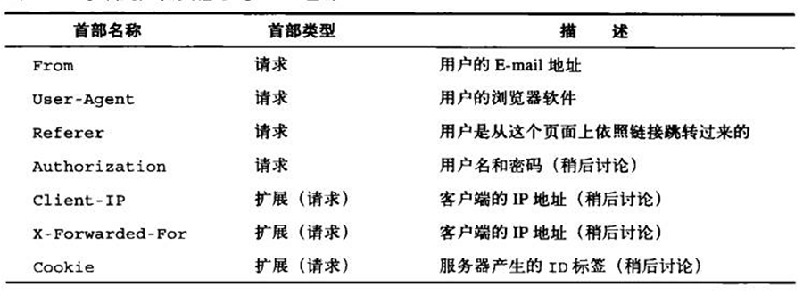
- From 首部一般由爬虫/自动化机器人程序发送，以用于在某些情况下，网站管理员与爬虫服务商取得联系。一般客户端鉴于保护用户隐私，不会发送该信息（邮箱地址）；
- User-Agent 首部可将用户浏览器及操作系统相关信息发送给服务器；
- Referer 首部提供了用户来源页面的 URL（即用户之前访问过哪个页面）。
- Page 274客户端 IP 地址：
- 服务器端可以通过承载 HTTP 请求的 TCP 来找到客户端的 IP 地址（Unix 下的
getpeernameAPI）； - 使用客户端 IP 地址作为用户标识的缺点：
- 客户端 IP 仅描述了用户所用的机器，而非用户；
- ISP 会为用户动态分配 IP，IP 所属并不固定；
- 基于 NAT（Network Address Translation，网络地址转换）的 IP 共享，导致多个用户会共享同一个外网 IP（和不同的端口号）；
- HTTP 代理和网关通常会打开一些新的、到原始服务器的 TCP 连接。
- Page 275基于 HTTP 首部的登录：
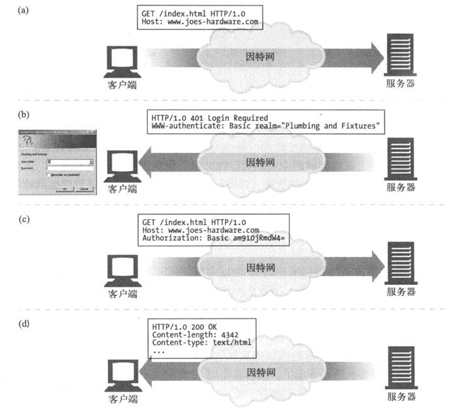
- 客户端向服务器发送请求；
- 服务器要求用户登录，返回一条 HTTP响应码 401 Login Required，并携带首部 WWW-authenticate 提供与验证机制相关的信息；
- 浏览器显示一个登录对话框，并用 Authorization 首部在下一条对服务器的请求中提供这些用户输入的登录信息（用户名、密码）；
- 服务器验证并返回客户端需要的资源。
- Page 277胖 URL：
- 即：包含有用户状态信息的 URL。用户首次登陆 Web 站点时，会生成一个唯一 ID，用服务器可以识别的方式将这个 ID 添加到 URL 中，然后服务器会将客户端重新导向这个“胖 URL”，服务器会通过 URL 中的 ID 来查询相关实体的状态信息；
- 存在的问题：
- 丑陋的 URL；
- 无法共享 URL；
- 破坏缓存：每个用户有特定版本的 URL；
- 额外的服务器负荷：服务器需要重写 HTML 页面上的 URL；
- 逃逸口：用户会无意间“脱离”胖 URL 构成的会话；
- 会话间是非持久的。
- Page 278Cookie：
- 类型：
- 持久 Cookie（会话信息存储在硬盘上）；
- 会话 Cookie（退出网页即失效）。
- 服务器通过返回首部 Set-Cookie 或 Set-Cookie2 来让浏览器为当前用户设置 Cookie 信息。当用户再次访问同一个 Web 站点时，浏览器会将属于刚站点的 Cookie 与每一个请求一同发送（Cookie 首部）；
- Cookie 字段：
- domain：域；
- path：域中与 Cookie 相关的路径前缀；
- secure：是否只有在使用 SSL 连接（HTTPS）时才发送该 Cookie；
- expires：过期时间；
- http：是否仅能通过 HTTP 请求来访问 Cookie。否则也可使用
document.cookie来访问； - size：Cookie 大小；
- name：Cookie 名字；
- value：Cookie 值。
- Page 291Cookie 潜在安全问题：
- CSRF（Cross-site Request Forgery，跨站请求伪造）：攻击者盗用用户身份，并以该用户的名义向正规网站发送“恶意请求”（即违背用户意愿的请求）；
- XSS：直接盗用（如发送到指定邮箱）合法用户的 Cookie，然后由攻击者进行非法操作。
第 12 章 - 基本认证机制
- Page 295HTTP 基本认证流程：
- 请求：第一条请求没有认证信息（GET）；
- 质询：服务器用 401 状态（Authorization Required）拒绝了请求，说明需要提供用户名和密码。服务器返回的 WWW-Authenticate 首部会对保护区域（realm）进行描述，同时认证算法（如 “Basic”）也在该首部中指定；
- 授权：客户端重新发出请求，附加 Authorization 首部，用来说明认证算法、用户名和密码；
- 成功：若授权成功，服务器返回请求文档。某些授权算法会同时返回 Authentication-Info 首部，携带与授权会话相关的附加信息。
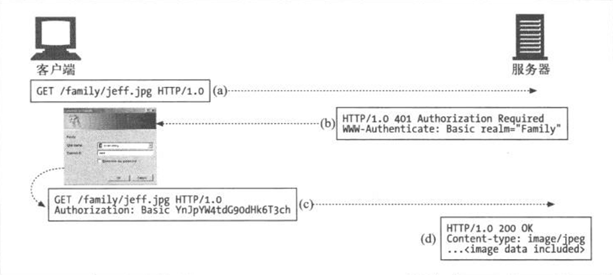
- Page 299代理认证：
- 可以通过代理服务器来对某组织内部资源进行统一的访问控制；
- 步骤与 Web 服务器身份验证步骤相同，但首部和状态码有所不同：
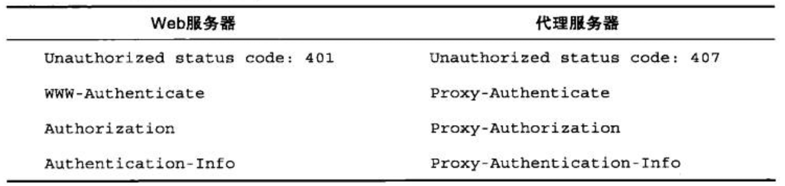
- Page 300基本认证的安全缺陷：
- 发送的用户名与密码明文传送；
- 可能被“重放攻击”；
- 没有提供针对代理和中间节点的防护措施；
- 假冒服务器很容易骗过基本认证。
第 13 章 - 摘要认证
- Page 305基本流程：
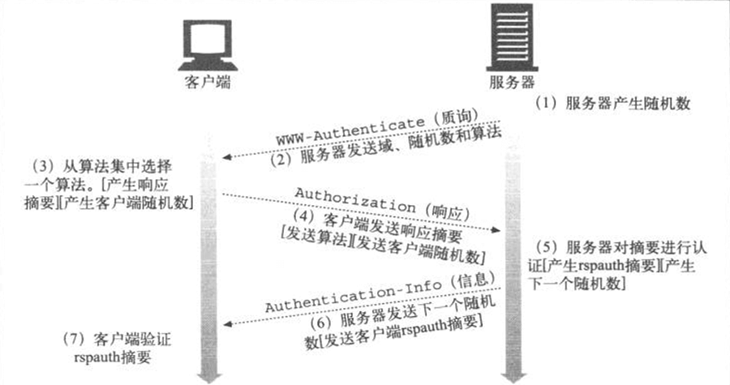
- 借助“摘要”保护密码（如 MD5）；
- 服务器可以通过向客户端发送一个“随机数”令牌（每次认证都会变化），在客户端计算摘要时将该令牌附加到密码上来防止“重放攻击”；
- 如果客户端需要对服务器进行认证，可以在步骤 (4) 中向服务器发送客户端随机数，并在 (5) 中由服务器计算，并在 (6) 中返回给客户端。
- Page 312预授权：
- 服务器可以直接将下一次授权需要使用的随机数随上一次的成功响应返回给客户端（存放在 Authentication-Info 首部），客户端在下一次授权时便可省略“请求/质询”的过程，直接通过 “Authorization” 首部进行“请求/授权”的过程。由于存在随机数依赖，该方法无法利用浏览器的“管道化”；
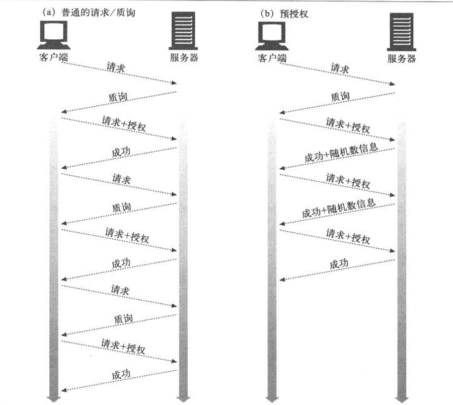
- 其他“预授权”方式：
- 服务器允许在一小段时间内使用同一个随机数；
- 客户端和服务器使用同步的、可预测的随机数生成算法。
（本章其他内容略）
第 14 章 - 安全 HTTP
- Page 325基本结构：
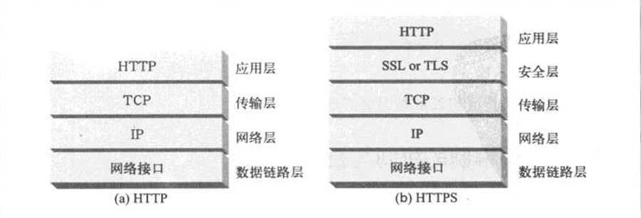
- 所有 HTTP 请求和响应数据在发送到网络之前，都要进行加密；
- 安全层可以使用 SSL 或 TLS。
- Page 330常用的对称加密算法：DES、Triple-DES、RC2、RC4。
- Page 334数字签名：用加密系统对报文进行“签名”（加了密的校验和），以说明是谁编写的报文，同时证明报文未被篡改过。
- Page 336数字证书：包含了由某个受信组织担保的用户或公司的相关信息。所有这些信息都是由一个官方的“证书颁发机构”以数字方式签发的，比如：
- 对象的名称（人、服务器、组织等）；
- 过期时间；
- 证书发布者（由谁为证书担保）；
- 来自证书发布者的数字签名。
- 基于 X.509 证书的服务器认证：
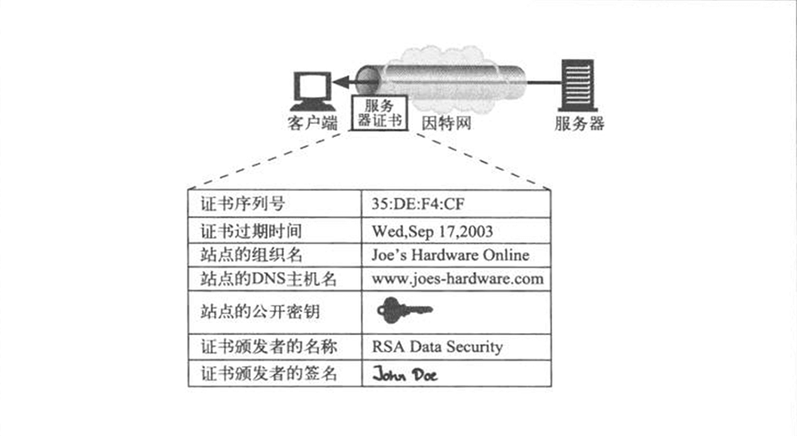
- 在通过 HTTPS 建立了安全 Web 事务后，现代浏览器会自动获取所连接服务器的数字证书，以进行验证。证书中包括：
- Web 站点的名称和主机名；
- Web 站点的公开密钥；
- 签名颁发机构的名称；
- 来自签名颁发机构的签名。
- Page 341SSL 握手：
- 在发送已加密的 HTTP 报文之前，客户端与服务器要进行一次 SSL 握手，在这个过程中，要完成以下工作：
- 交换协议版本号；
- 选择一个两端都了解的密码；
- 对两端的身份进行验证；
- 生成临时的会话密钥，以便加密信道。
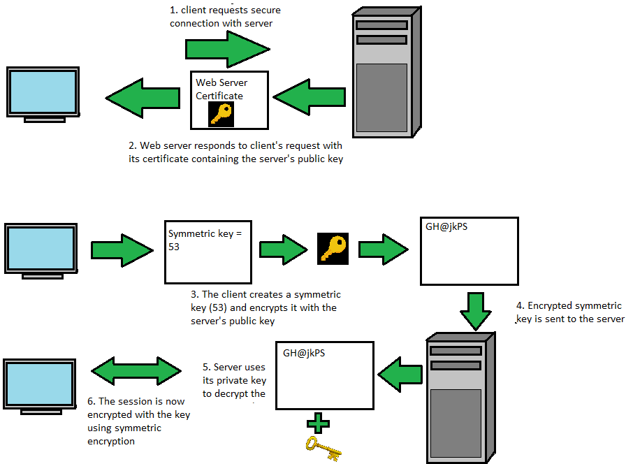
- “非对称加密”用于客户端向服务器发送“随机数”（用于后续的对称加密过程）；
- “对称加密”用于支持后续的数据加解密。
第 15 章 - 实体和编码
- Page 359用于描述实体的首部字段：
- Content-Type：实体承载对象的类型；
- Content-Length：实体主体长度或大小；
- 记录的是“编码后”的主体字节长度，而非原始主体长度；
- 对于持久连接是必不可少的，客户端通过该字段可以知道一个报文到哪里结束，下一个连续报文从哪里开始。
- Content-Language：与传送对象匹配的人类语言；
- Content-Encoding：对象数据进行的任意变换（如：压损）；
- Content-Location：备用位置，请求时可以获得对象；
- Content-Range：若是部分实体，可以说明属于整体的哪个部分；
- Content-MD5：实体主体内容的校验和；
- 为对主体进行内容编码之后、传输编码之前的 MD5 值；
- 用于检测“不经意”造成的报文修改。
- Last-Modified：所传输内容在服务器上创建或最后修改的日期时间；
- Expires：实体数据将要失效的日期时间；
- Allow：该资源允许的请求方法；
- ETag：文档特定实例的唯一验证码；
- Cache-Control：指出如何缓存该文档。
- Page 366多部分表单提交：
- 一般用于含有多个字段的表单提交，或作为承载若干文档片段的范围响应；
- 首部使用：Content-Type: multipart/form-date 或 Content-Type: multipart/mixed。其中，还会携带 boundary 参数说明分割主体中不同部分使用的字符串。
- Page 367多部分范围响应：
- 多部分响应含有首部 Content-Type: multipart/byteranges，以及带有不同范围的多部分主体；
- Page 369内容编码：
- 常用内容编码类型（Content-Encoding 值）：
- gzip：表明实体采用 GNU zip 编码；
- compress：表明实体采用 Unix 的文件压缩程序；
- deflate：表明实体采用 zlib 的格式进行压缩；
- identity：表明不对实体进行编码。
- 客户端可以通过首部 Accept-Encoding 来告知服务器自己能够支持的内容编码类型。客户端可以给每种编码附带 “Q” 值参数来说明编码的优先级。
- Page 371传输编码：
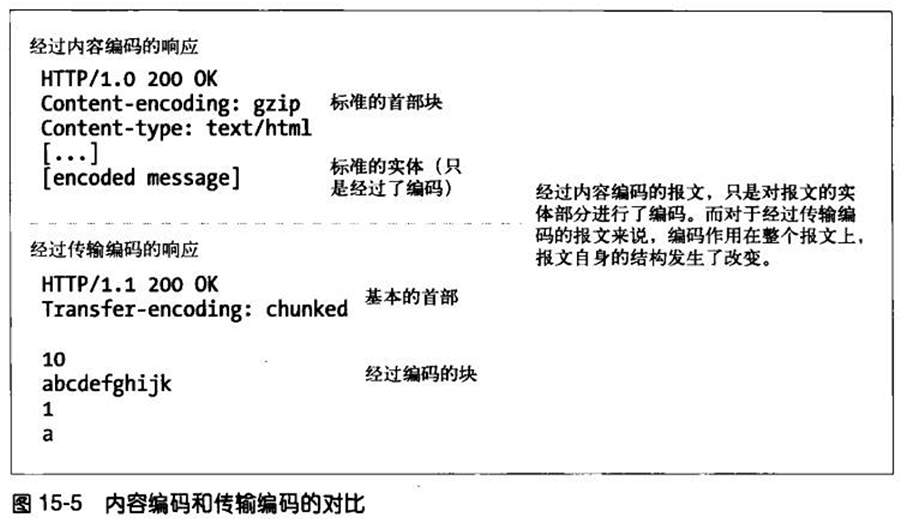
- 用于改变报文中的数据在网络上的传输方式；
- 用于描述和控制传输编码的首部：
- Transfer-Encoding：告知接收方为了可靠地传输报文，已经对其进行了何种传输编码；
- TE：用在请求首部中，告知服务器可以使用哪些传输编码扩展（拖挂、分组传输）。
- 分块编码：
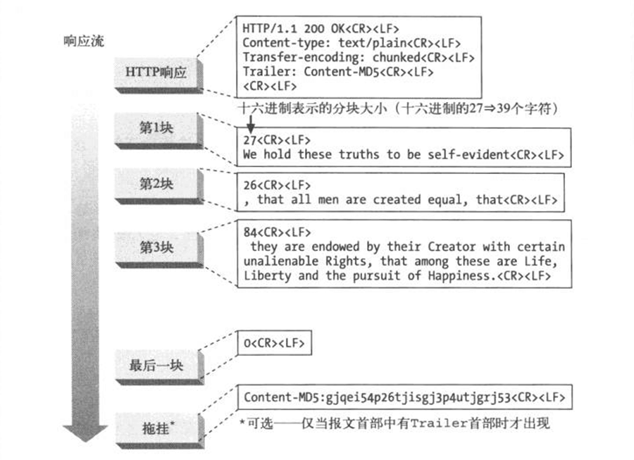
- 可以不需要 Content-Length 首部；
- 将报文分割为若干个大小已知的块（标记在每个块的开始），块之间紧挨着发送。最后一块大小为 0，以标记为主体结束的信号；
- 下层的TCP 传输层会保证分块的“响应流”按照顺序依次到达；
- “拖挂”（发送于最后一块主体数据之后）中可以包含附带的首部字段，它们的值在报文开始时可能是无法确定的（如：Content-MD5）；
- Page 375内容编码与传输编码相结合：
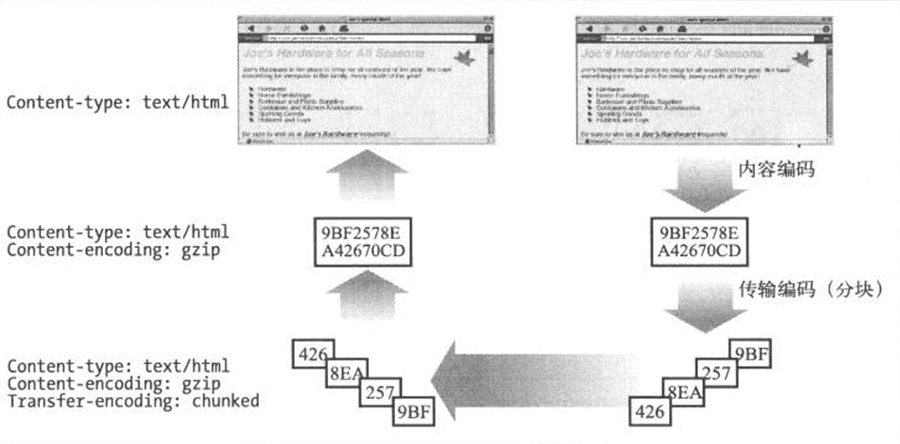
- Page 380范围请求：
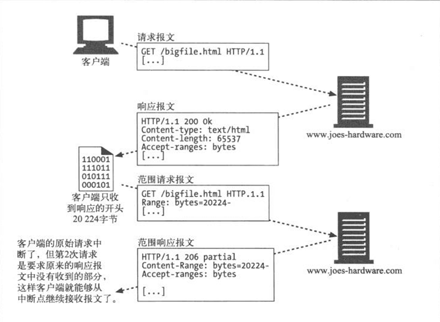
- 可以通过为请求添加 Range 头部来请求部分实体；
- 服务器可以通过在响应中包含 Accept-Ranges 首部来向客户端说明可接受的范围请求（字节）；
- 在 P2P 文件共享客户端软件中应用较多。
- Page 382差异编码：通过交换对象改变的部分而非完整的对象来优化传输性能（实现复杂，且优化效果并不明显）。
第 20 章 - 重定向与负载均衡
- Page 472通用的重定向方法：
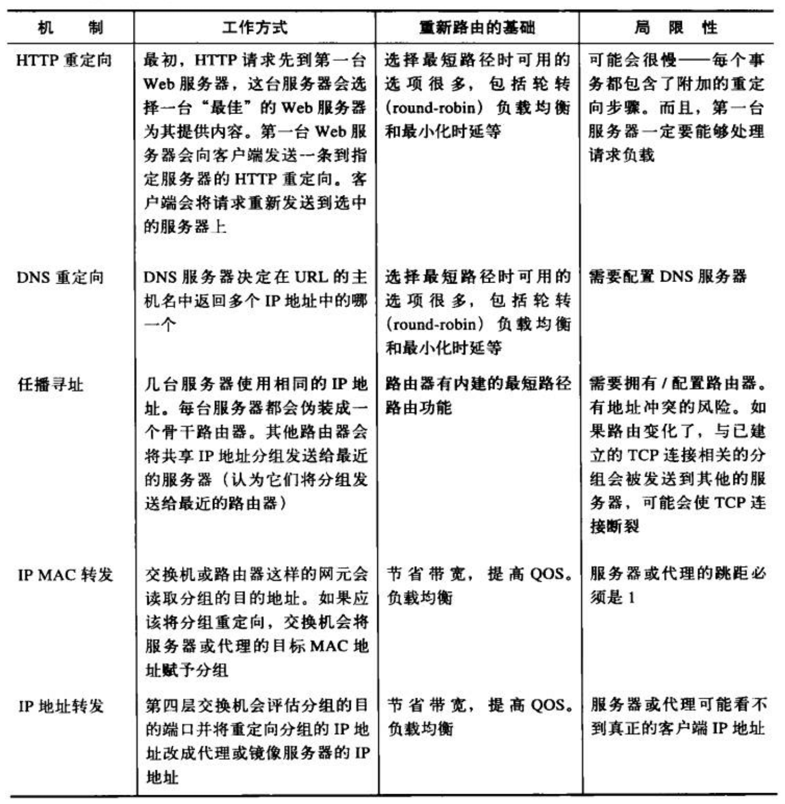
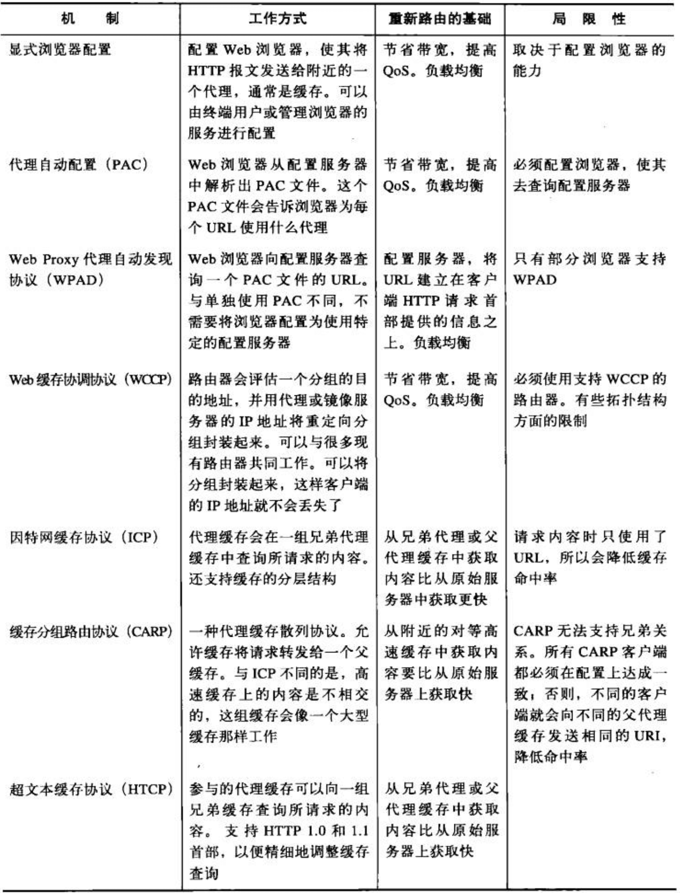
评论 | Comments